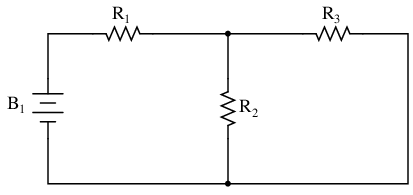
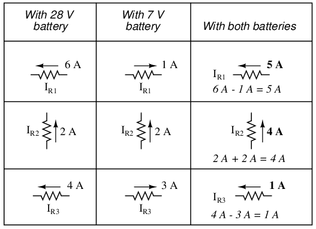
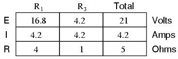
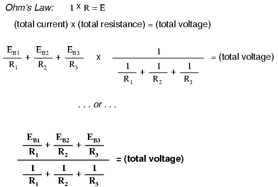
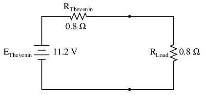

Generally speaking, network analysis is any structured technique used to mathematically analyze a circuit (a “network” of interconnected components). Quite often the technician or engineer will encounter circuits containing multiple sources of power or component configurations which defy simplification by series/parallel analysis techniques. In those cases, he or she will be forced to use other means. This chapter presents a few techniques useful in analyzing such complex circuits.
To illustrate how even a simple circuit can defy analysis by breakdown into series and parallel portions, take start with this series-parallel circuit:

To analyze the above circuit, one would first find the equivalent of R2 and R3 in parallel, then add R1 in series to arrive at a total resistance. Then, taking the voltage of battery B1 with that total circuit resistance, the total current could be calculated through the use of Ohm's Law (I=E/R), then that current figure used to calculate voltage drops in the circuit. All in all, a fairly simple procedure.
However, the addition of just one more battery could change all of that:
Resistors R2 and R3 are no longer in parallel with each other, because B2 has been inserted into R3's branch of the circuit. Upon closer inspection, it appears there are no two resistors in this circuit directly in series or parallel with each other. This is the crux of our problem: in series-parallel analysis, we started off by identifying sets of resistors that were directly in series or parallel with each other, reducing them to single equivalent resistances. If there are no resistors in a simple series or parallel configuration with each other, then what can we do?
It should be clear that this seemingly simple circuit, with only three resistors, is impossible to reduce as a combination of simple series and simple parallel sections: it is something different altogether. However, this is not the only type of circuit defying series/parallel analysis:
Here we have a bridge circuit, and for the sake of example we will suppose that it is not balanced (ratio R1/R4 not equal to ratio R2/R5). If it were balanced, there would be zero current through R3, and it could be approached as a series/parallel combination circuit (R1--R4 // R2--R5). However, any current through R3 makes a series/parallel analysis impossible. R1 is not in series with R4 because there's another path for electrons to flow through R3. Neither is R2 in series with R5 for the same reason. Likewise, R1 is not in parallel with R2 because R3 is separating their bottom leads. Neither is R4 in parallel with R5. Aaarrggghhhh!
Although it might not be apparent at this point, the heart of the problem is the existence of multiple unknown quantities. At least in a series/parallel combination circuit, there was a way to find total resistance and total voltage, leaving total current as a single unknown value to calculate (and then that current was used to satisfy previously unknown variables in the reduction process until the entire circuit could be analyzed). With these problems, more than one parameter (variable) is unknown at the most basic level of circuit simplification.
With the two-battery circuit, there is no way to arrive at a value for “total resistance,” because there are two sources of power to provide voltage and current (we would need two “total” resistances in order to proceed with any Ohm's Law calculations). With the unbalanced bridge circuit, there is such a thing as total resistance across the one battery (paving the way for a calculation of total current), but that total current immediately splits up into unknown proportions at each end of the bridge, so no further Ohm's Law calculations for voltage (E=IR) can be carried out.
So what can we do when we're faced with multiple unknowns in a circuit? The answer is initially found in a mathematical process known as simultaneous equations or systems of equations, whereby multiple unknown variables are solved by relating them to each other in multiple equations. In a scenario with only one unknown (such as every Ohm's Law equation we've dealt with thus far), there only needs to be a single equation to solve for the single unknown:

However, when we're solving for multiple unknown values, we need to have the same number of equations as we have unknowns in order to reach a solution. There are several methods of solving simultaneous equations, all rather intimidating and all too complex for explanation in this chapter. However, many scientific and programmable calculators are able to solve for simultaneous unknowns, so it is recommended to use such a calculator when first learning how to analyze these circuits.
This is not as scary as it may seem at first. Trust me!
Later on we'll see that some clever people have found tricks to avoid having to use simultaneous equations on these types of circuits. We call these tricks network theorems, and we will explore a few later in this chapter.
The first and most straightforward network analysis technique is called the Branch Current Method. In this method, we assume directions of currents in a network, then write equations describing their relationships to each other through Kirchhoff's and Ohm's Laws. Once we have one equation for every unknown current, we can solve the simultaneous equations and determine all currents, and therefore all voltage drops in the network.
Let's use this circuit to illustrate the method:
The first step is to choose a node (junction of wires) in the circuit to use as a point of reference for our unknown currents. I'll choose the node joining the right of R1, the top of R2, and the left of R3.
At this node, guess which directions the three wires' currents take, labeling the three currents as I1, I2, and I3, respectively. Bear in mind that these directions of current are speculative at this point. Fortunately, if it turns out that any of our guesses were wrong, we will know when we mathematically solve for the currents (any “wrong” current directions will show up as negative numbers in our solution).

Kirchhoff's Current Law (KCL) tells us that the algebraic sum of currents entering and exiting a node must equal zero, so we can relate these three currents (I1, I2, and I3) to each other in a single equation. For the sake of convention, I'll denote any current entering the node as positive in sign, and any current exiting the node as negative in sign:
The next step is to label all voltage drop polarities across resistors according to the assumed directions of the currents. Remember that the “upstream” end of a resistor will always be negative, and the “downstream” end of a resistor positive with respect to each other, since electrons are negatively charged:
The battery polarities, of course, remain as they were according to their symbology (short end negative, long end positive). It is OK if the polarity of a resistor's voltage drop doesn't match with the polarity of the nearest battery, so long as the resistor voltage polarity is correctly based on the assumed direction of current through it. In some cases we may discover that current will be forced backwards through a battery, causing this very effect. The important thing to remember here is to base all your resistor polarities and subsequent calculations on the directions of current(s) initially assumed. As stated earlier, if your assumption happens to be incorrect, it will be apparent once the equations have been solved (by means of a negative solution). The magnitude of the solution, however, will still be correct.
Kirchhoff's Voltage Law (KVL) tells us that the algebraic sum of all voltages in a loop must equal zero, so we can create more equations with current terms (I1, I2, and I3) for our simultaneous equations. To obtain a KVL equation, we must tally voltage drops in a loop of the circuit, as though we were measuring with a real voltmeter. I'll choose to trace the left loop of this circuit first, starting from the upper-left corner and moving counter-clockwise (the choice of starting points and directions is arbitrary). The result will look like this:

Having completed our trace of the left loop, we add these voltage indications together for a sum of zero:
Of course, we don't yet know what the voltage is across R1 or R2, so we can't insert those values into the equation as numerical figures at this point. However, we do know that all three voltages must algebraically add to zero, so the equation is true. We can go a step further and express the unknown voltages as the product of the corresponding unknown currents (I1 and I2) and their respective resistors, following Ohm's Law (E=IR), as well as eliminate the 0 term:
Since we know what the values of all the resistors are in ohms, we can just substitute those figures into the equation to simplify things a bit:
You might be wondering why we went through all the trouble of manipulating this equation from its initial form (-28 + ER2 + ER1). After all, the last two terms are still unknown, so what advantage is there to expressing them in terms of unknown voltages or as unknown currents (multiplied by resistances)? The purpose in doing this is to get the KVL equation expressed using the same unknown variables as the KCL equation, for this is a necessary requirement for any simultaneous equation solution method. To solve for three unknown currents (I1, I2, and I3), we must have three equations relating these three currents (not voltages!) together.
Applying the same steps to the right loop of the circuit (starting at the chosen node and moving counter-clockwise), we get another KVL equation:
Knowing now that the voltage across each resistor can be and should be expressed as the product of the corresponding current and the (known) resistance of each resistor, we can re-write the equation as such:
Now we have a mathematical system of three equations (one KCL equation and two KVL equations) and three unknowns:
For some methods of solution (especially any method involving a calculator), it is helpful to express each unknown term in each equation, with any constant value to the right of the equal sign, and with any “unity” terms expressed with an explicit coefficient of 1. Re-writing the equations again, we have:
Using whatever solution techniques are available to us, we should arrive at a solution for the three unknown current values:
So, I1 is 5 amps, I2 is 4 amps, and I3 is a negative 1 amp. But what does “negative” current mean? In this case, it means that our assumed direction for I3 was opposite of its real direction. Going back to our original circuit, we can re-draw the current arrow for I3 (and re-draw the polarity of R3's voltage drop to match):
Notice how current is being pushed backwards through battery 2 (electrons flowing “up”) due to the higher voltage of battery 1 (whose current is pointed “down” as it normally would)! Despite the fact that battery B2's polarity is trying to push electrons down in that branch of the circuit, electrons are being forced backwards through it due to the superior voltage of battery B1. Does this mean that the stronger battery will always “win” and the weaker battery always get current forced through it backwards? No! It actually depends on both the batteries' relative voltages and the resistor values in the circuit. The only sure way to determine what's going on is to take the time to mathematically analyze the network.
Now that we know the magnitude of all currents in this circuit, we can calculate voltage drops across all resistors with Ohm's Law (E=IR):
Let us now analyze this network using SPICE to verify our voltage figures.[spi] We could analyze current as well with SPICE, but since that requires the insertion of extra components into the circuit, and because we know that if the voltages are all the same and all the resistances are the same, the currents must all be the same, I'll opt for the less complex analysis. Here's a re-drawing of our circuit, complete with node numbers for SPICE to reference:
network analysis example v1 1 0 v2 3 0 dc 7 r1 1 2 4 r2 2 0 2 r3 2 3 1 .dc v1 28 28 1 .print dc v(1,2) v(2,0) v(2,3) .end
v1 v(1,2) v(2) v(2,3) 2.800E+01 2.000E+01 8.000E+00 1.000E+00
Sure enough, the voltage figures all turn out to be the same: 20 volts across R1 (nodes 1 and 2), 8 volts across R2 (nodes 2 and 0), and 1 volt across R3 (nodes 2 and 3). Take note of the signs of all these voltage figures: they're all positive values! SPICE bases its polarities on the order in which nodes are listed, the first node being positive and the second node negative. For example, a figure of positive (+) 20 volts between nodes 1 and 2 means that node 1 is positive with respect to node 2. If the figure had come out negative in the SPICE analysis, we would have known that our actual polarity was “backwards” (node 1 negative with respect to node 2). Checking the node orders in the SPICE listing, we can see that the polarities all match what we determined through the Branch Current method of analysis.
The Mesh Current Method, also known as the Loop Current Method, is quite similar to the Branch Current method in that it uses simultaneous equations, Kirchhoff's Voltage Law, and Ohm's Law to determine unknown currents in a network. It differs from the Branch Current method in that it does not use Kirchhoff's Current Law, and it is usually able to solve a circuit with less unknown variables and less simultaneous equations, which is especially nice if you're forced to solve without a calculator.
Let's see how this method works on the same example problem:
The first step in the Mesh Current method is to identify “loops” within the circuit encompassing all components. In our example circuit, the loop formed by B1, R1, and R2 will be the first while the loop formed by B2, R2, and R3 will be the second. The strangest part of the Mesh Current method is envisioning circulating currents in each of the loops. In fact, this method gets its name from the idea of these currents meshing together between loops like sets of spinning gears:
The choice of each current's direction is entirely arbitrary, just as in the Branch Current method, but the resulting equations are easier to solve if the currents are going the same direction through intersecting components (note how currents I1 and I2 are both going “up” through resistor R2, where they “mesh,” or intersect). If the assumed direction of a mesh current is wrong, the answer for that current will have a negative value.
The next step is to label all voltage drop polarities across resistors according to the assumed directions of the mesh currents. Remember that the “upstream” end of a resistor will always be negative, and the “downstream” end of a resistor positive with respect to each other, since electrons are negatively charged. The battery polarities, of course, are dictated by their symbol orientations in the diagram, and may or may not “agree” with the resistor polarities (assumed current directions):
Using Kirchhoff's Voltage Law, we can now step around each of these loops, generating equations representative of the component voltage drops and polarities. As with the Branch Current method, we will denote a resistor's voltage drop as the product of the resistance (in ohms) and its respective mesh current (that quantity being unknown at this point). Where two currents mesh together, we will write that term in the equation with resistor current being the sum of the two meshing currents.
Tracing the left loop of the circuit, starting from the upper-left corner and moving counter-clockwise (the choice of starting points and directions is ultimately irrelevant), counting polarity as if we had a voltmeter in hand, red lead on the point ahead and black lead on the point behind, we get this equation:
Notice that the middle term of the equation uses the sum of mesh currents I1 and I2 as the current through resistor R2. This is because mesh currents I1 and I2 are going the same direction through R2, and thus complement each other. Distributing the coefficient of 2 to the I1 and I2 terms, and then combining I1 terms in the equation, we can simplify as such:
At this time we have one equation with two unknowns. To be able to solve for two unknown mesh currents, we must have two equations. If we trace the other loop of the circuit, we can obtain another KVL equation and have enough data to solve for the two currents. Creature of habit that I am, I'll start at the upper-left hand corner of the right loop and trace counter-clockwise:
Simplifying the equation as before, we end up with:

Now, with two equations, we can use one of several methods to mathematically solve for the unknown currents I1 and I2:
Knowing that these solutions are values for mesh currents, not branch currents, we must go back to our diagram to see how they fit together to give currents through all components:
The solution of -1 amp for I2 means that our initially assumed direction of current was incorrect. In actuality, I2 is flowing in a counter-clockwise direction at a value of (positive) 1 amp:
This change of current direction from what was first assumed will alter the polarity of the voltage drops across R2 and R3 due to current I2. From here, we can say that the current through R1 is 5 amps, with the voltage drop across R1 being the product of current and resistance (E=IR), 20 volts (positive on the left and negative on the right). Also, we can safely say that the current through R3 is 1 amp, with a voltage drop of 1 volt (E=IR), positive on the left and negative on the right. But what is happening at R2?
Mesh current I1 is going “up” through R2, while mesh current I2 is going “down” through R2. To determine the actual current through R2, we must see how mesh currents I1 and I2 interact (in this case they're in opposition), and algebraically add them to arrive at a final value. Since I1 is going “up” at 5 amps, and I2 is going “down” at 1 amp, the real current through R2 must be a value of 4 amps, going “up:”
A current of 4 amps through R2's resistance of 2 Ω gives us a voltage drop of 8 volts (E=IR), positive on the top and negative on the bottom.
The primary advantage of Mesh Current analysis is that it generally allows for the solution of a large network with fewer unknown values and fewer simultaneous equations. Our example problem took three equations to solve the Branch Current method and only two equations using the Mesh Current method. This advantage is much greater as networks increase in complexity:
To solve this network using Branch Currents, we'd have to establish five variables to account for each and every unique current in the circuit (I1 through I5). This would require five equations for solution, in the form of two KCL equations and three KVL equations (two equations for KCL at the nodes, and three equations for KVL in each loop):
I suppose if you have nothing better to do with your time than to solve for five unknown variables with five equations, you might not mind using the Branch Current method of analysis for this circuit. For those of us who have better things to do with our time, the Mesh Current method is a whole lot easier, requiring only three unknowns and three equations to solve:
Less equations to work with is a decided advantage, especially when performing simultaneous equation solution by hand (without a calculator).
Another type of circuit that lends itself well to Mesh Current is the unbalanced Wheatstone Bridge. Take this circuit, for example:
Since the ratios of R1/R4 and R2/R5 are unequal, we know that there will be voltage across resistor R3, and some amount of current through it. As discussed at the beginning of this chapter, this type of circuit is irreducible by normal series-parallel analysis, and may only be analyzed by some other method.
We could apply the Branch Current method to this circuit, but it would require six currents (I1 through I6), leading to a very large set of simultaneous equations to solve. Using the Mesh Current method, though, we may solve for all currents and voltages with much fewer variables.
The first step in the Mesh Current method is to draw just enough mesh currents to account for all components in the circuit. Looking at our bridge circuit, it should be obvious where to place two of these currents:
The directions of these mesh currents, of course, is arbitrary. However, two mesh currents is not enough in this circuit, because neither I1 nor I2 goes through the battery. So, we must add a third mesh current, I3:
Here, I have chosen I3 to loop from the bottom side of the battery, through R4, through R1, and back to the top side of the battery. This is not the only path I could have chosen for I3, but it seems the simplest.
Now, we must label the resistor voltage drop polarities, following each of the assumed currents' directions:
Notice something very important here: at resistor R4, the polarities for the respective mesh currents do not agree. This is because those mesh currents (I2 and I3) are going through R4 in different directions. This does not preclude the use of the Mesh Current method of analysis, but it does complicate it a bit. Though later, we will show how to avoid the R4 current clash. (See Example below)
Generating a KVL equation for the top loop of the bridge, starting from the top node and tracing in a clockwise direction:
In this equation, we represent the common directions of currents by their sums through common resistors. For example, resistor R3, with a value of 100 Ω, has its voltage drop represented in the above KVL equation by the expression 100(I1 + I2), since both currents I1 and I2 go through R3 from right to left. The same may be said for resistor R1, with its voltage drop expression shown as 150(I1 + I3), since both I1 and I3 go from bottom to top through that resistor, and thus work together to generate its voltage drop.
Generating a KVL equation for the bottom loop of the bridge will not be so easy, since we have two currents going against each other through resistor R4. Here is how I do it (starting at the right-hand node, and tracing counter-clockwise):
Note how the second term in the equation's original form has resistor R4's value of 300 Ω multiplied by the difference between I2 and I3 (I2 - I3). This is how we represent the combined effect of two mesh currents going in opposite directions through the same component. Choosing the appropriate mathematical signs is very important here: 300(I2 - I3) does not mean the same thing as 300(I3 - I2). I chose to write 300(I2 - I3) because I was thinking first of I2's effect (creating a positive voltage drop, measuring with an imaginary voltmeter across R4, red lead on the bottom and black lead on the top), and secondarily of I3's effect (creating a negative voltage drop, red lead on the bottom and black lead on the top). If I had thought in terms of I3's effect first and I2's effect secondarily, holding my imaginary voltmeter leads in the same positions (red on bottom and black on top), the expression would have been -300(I3 - I2). Note that this expression is mathematically equivalent to the first one: +300(I2 - I3).
Well, that takes care of two equations, but I still need a third equation to complete my simultaneous equation set of three variables, three equations. This third equation must also include the battery's voltage, which up to this point does not appear in either two of the previous KVL equations. To generate this equation, I will trace a loop again with my imaginary voltmeter starting from the battery's bottom (negative) terminal, stepping clockwise (again, the direction in which I step is arbitrary, and does not need to be the same as the direction of the mesh current in that loop):
Solving for I1, I2, and I3 using whatever simultaneous equation method we prefer:

Example:
Use Octave to find the solution for I1, I2, and I3 from the above simplified form of equations. [octav]
Solution:
In Octave, an open source Matlab® clone, enter the coefficients into the A matrix between square brackets with column elements comma separated, and rows semicolon separated.[octav] Enter the voltages into the column vector: b. The unknown currents: I1, I2, and I3 are calculated by the command: x=A\b. These are contained within the x column vector.
octave:1>A = [300,100,150;100,650,-300;-150,300,-450] A = 300 100 150 100 650 -300 -150 300 -450 octave:2> b = [0;0;-24] b = 0 0 -24 octave:3> x = A\b x = -0.093793 0.077241 0.136092
The negative value arrived at for I1 tells us that the assumed direction for that mesh current was incorrect. Thus, the actual current values through each resistor is as such:
Calculating voltage drops across each resistor:
A SPICE simulation confirms the accuracy of our voltage calculations:[spi]
unbalanced wheatstone bridge v1 1 0 r1 1 2 150 r2 1 3 50 r3 2 3 100 r4 2 0 300 r5 3 0 250 .dc v1 24 24 1 .print dc v(1,2) v(1,3) v(3,2) v(2,0) v(3,0) .end
v1 v(1,2) v(1,3) v(3,2) v(2) v(3) 2.400E+01 6.345E+00 4.690E+00 1.655E+00 1.766E+01 1.931E+01
Example:
(a) Find a new path for current I3 that does not produce a conflicting polarity on any resistor compared to I1 or I2. R4 was the offending component. (b) Find values for I1, I2, and I3. (c) Find the five resistor currents and compare to the previous values.
Solution: [dvn]
(a) Route I3 through R5, R3 and R1 as shown:
Note that the conflicting polarity on R4 has been removed. Moreover, none of the other resistors have conflicting polarities.
(b) Octave, an open source (free) matlab clone, yields a mesh current vector at “x”:[octav]
octave:1> A = [300,100,250;100,650,350;-250,-350,-500]
A =
300 100 250
100 650 350
-250 -350 -500
octave:2> b = [0;0;-24]
b =
0
0
-24
octave:3> x = A\b
x =
-0.093793
-0.058851
0.136092
Not all currents I1, I2, and I3 are the same (I2) as the previous bridge because of different loop paths However, the resistor currents compare to the previous values:
IR1 = I1 + I3 = -93.793 ma + 136.092 ma = 42.299 ma IR2 = I1 = -93.793 ma IR3 = I1 + I2 + I3 = -93.793 ma -58.851 ma + 136.092 ma = -16.552 ma IR4 = I2 = -58.851 ma IR5 = I2 + I3 = -58.851 ma + 136.092 ma = 77.241 ma
Since the resistor currents are the same as the previous values, the resistor voltages will be identical and need not be calculated again.
We take a second look at the “mesh current method” with all the currents running counterclockwise (ccw). The motivation is to simplify the writing of mesh equations by ignoring the resistor voltage drop polarity. Though, we must pay attention to the polarity of voltage sources with respect to assumed current direction. The sign of the resistor voltage drops will follow a fixed pattern.
If we write a set of conventional mesh current equations for the circuit below, where we do pay attention to the signs of the voltage drop across the resistors, we may rearrange the coefficients into a fixed pattern:
Once rearranged, we may write equations by inspection. The signs of the coefficients follow a fixed pattern in the pair above, or the set of three in the rules below.
+(sum of R's loop 1)I1 - (common R loop 1-2)I2 - (common R loop 1-3)I3 = E1 -(common R loop 1-2)I1 + (sum of R's loop 2)I2 - (common R loop 2-3)I3 = E2 -(common R loop 1-3)I1 - (common R loop 2-3)I2 + (sum of R's loop 3)I3 = E3
While the above rules are specific for a three mesh circuit, the rules may be extended to smaller or larger meshes. The figure below illustrates the application of the rules. The three currents are all drawn in the same direction, counterclockwise. One KVL equation is written for each of the three loops. Note that there is no polarity drawn on the resistors. We do not need it to determine the signs of the coefficients. Though we do need to pay attention to the polarity of the voltage source with respect to current direction. The I3counterclockwise current traverses the 24V source from (+) to (-). This is a voltage rise for electron current flow. Therefore, the third equation right hand side is +24V.
In Octave, enter the coefficients into the A matrix with column elements comma separated, and rows semicolon separated. Enter the voltages into the column vector b. Solve for the unknown currents: I1, I2, and I3 with the command: x=A\b. These currents are contained within the x column vector. The positive values indicate that the three mesh currents all flow in the assumed counterclockwise direction.
octave:2> A=[300,-100,-150;-100,650,-300;-150,-300,450] A = 300 -100 -150 -100 650 -300 -150 -300 450 octave:3> b=[0;0;24] b = 0 0 24 octave:4> x=A\b x = 0.093793 0.077241 0.136092
The mesh currents match the previous solution by a different mesh current method.. The calculation of resistor voltages and currents will be identical to the previous solution. No need to repeat here.
Note that electrical engineering texts are based on conventional current flow. The loop-current, mesh-current method in those text will run the assumed mesh currents clockwise.[aef] The conventional current flows out the (+) terminal of the battery through the circuit, returning to the (-) terminal. A conventional current voltage rise corresponds to tracing the assumed current from (-) to (+) through any voltage sources.
One more example of a previous circuit follows. The resistance around loop 1 is 6 Ω, around loop 2: 3 Ω. The resistance common to both loops is 2 Ω. Note the coefficients of I1 and I2 in the pair of equations. Tracing the assumed counterclockwise loop 1 current through B1 from (+) to (-) corresponds to an electron current flow voltage rise. Thus, the sign of the 28 V is positive. The loop 2 counter clockwise assumed current traces (-) to (+) through B2, a voltage drop. Thus, the sign of B2 is negative, -7 in the 2nd mesh equation. Once again, there are no polarity markings on the resistors. Nor do they figure into the equations.
The currents I1 = 5 A, and I2 = 1 A are both positive. They both flow in the direction of the counterclockwise loops. This compares with previous results.
The node voltage method of analysis solves for unknown voltages at circuit nodes in terms of a system of KCL equations. This analysis looks strange because it involves replacing voltage sources with equivalent current sources. Also, resistor values in ohms are replaced by equivalent conductances in siemens, G = 1/R. The siemens (S) is the unit of conductance, having replaced the mho unit. In any event S = Ω-1. And S = mho (obsolete).
We start with a circuit having conventional voltage sources. A common node E0 is chosen as a reference point. The node voltages E1 and E2 are calculated with respect to this point.
A voltage source in series with a resistance must be replaced by an equivalent current source in parallel with the resistance. We will write KCL equations for each node. The right hand side of the equation is the value of the current source feeding the node.
Replacing voltage sources and associated series resistors with equivalent current sources and parallel resistors yields the modified circuit. Substitute resistor conductances in siemens for resistance in ohms.
I1 = E1/R1 = 10/2 = 5 A I2 = E2/R5 = 4/1 = 4 A G1 = 1/R1 = 1/2 Ω = 0.5 S G2 = 1/R2 = 1/4 Ω = 0.25 S G3 = 1/R3 = 1/2.5 Ω = 0.4 S G4 = 1/R4 = 1/5 Ω = 0.2 S G5 = 1/R5 = 1/1 Ω = 1.0 S
The Parallel conductances (resistors) may be combined by addition of the conductances. Though, we will not redraw the circuit. The circuit is ready for application of the node voltage method.
GA = G1 + G2 = 0.5 S + 0.25 S = 0.75 S GB = G4 + G5 = 0.2 S + 1 S = 1.2 S
Deriving a general node voltage method, we write a pair of KCL equations in terms of unknown node voltages V1 and V2 this one time. We do this to illustrate a pattern for writing equations by inspection.
GAE1 + G3(E1 - E2) = I1 (1) GBE2 - G3(E1 - E2) = I2 (2) (GA + G3 )E1 -G3E2 = I1 (1) -G3E1 + (GB + G3)E2 = I2 (2)
The coefficients of the last pair of equations above have been rearranged to show a pattern. The sum of conductances connected to the first node is the positive coefficient of the first voltage in equation (1). The sum of conductances connected to the second node is the positive coefficient of the second voltage in equation (2). The other coefficients are negative, representing conductances between nodes. For both equations, the right hand side is equal to the respective current source connected to the node. This pattern allows us to quickly write the equations by inspection. This leads to a set of rules for the node voltage method of analysis.
Example: Set up the equations and solve for the node voltages using the numerical values in the above figure.
Solution:
(0.5+0.25+0.4)E1 -(0.4)E2= 5 -(0.4)E1 +(0.4+0.2+1.0)E2 = -4 (1.15)E1 -(0.4)E2= 5 -(0.4)E1 +(1.6)E2 = -4 E1 = 3.8095 E2 = -1.5476
The solution of two equations can be performed with a calculator, or with octave (not shown).[octav] The solution is verified with SPICE based on the original schematic diagram with voltage sources. [spi] Though, the circuit with the current sources could have been simulated.
V1 11 0 DC 10 V2 22 0 DC -4 r1 11 1 2 r2 1 0 4 r3 1 2 2.5 r4 2 0 5 r5 2 22 1 .DC V1 10 10 1 V2 -4 -4 1 .print DC V(1) V(2) .end v(1) v(2) 3.809524e+00 -1.547619e+00
One more example. This one has three nodes. We do not list the conductances on the schematic diagram. However, G1 = 1/R1, etc.
There are three nodes to write equations for by inspection. Note that the coefficients are positive for equation (1) E1, equation (2) E2, and equation (3) E3. These are the sums of all conductances connected to the nodes. All other coefficients are negative, representing a conductance between nodes. The right hand side of the equations is the associated current source, 0.136092 A for the only current source at node 1. The other equations are zero on the right hand side for lack of current sources. We are too lazy to calculate the conductances for the resistors on the diagram. Thus, the subscripted G's are the coefficients.
(G1 + G2)E1 -G1E2 -G2E3 = 0.136092 -G1E1 +(G1 + G3 + G4)E2 -G3E3 = 0 -G2E1 -G3E2 +(G2 + G3 + G5)E3 = 0
We are so lazy that we enter reciprocal resistances and sums of reciprocal resistances into the octave “A” matrix, letting octave compute the matrix of conductances after “A=”.[octav] The initial entry line was so long that it was split into three rows. This is different than previous examples. The entered “A” matrix is delineated by starting and ending square brackets. Column elements are space separated. Rows are “new line” separated. Commas and semicolons are not need as separators. Though, the current vector at “b” is semicolon separated to yield a column vector of currents.
octave:12> A = [1/150+1/50 -1/150 -1/50 > -1/150 1/150+1/100+1/300 -1/100 > -1/50 -1/100 1/50+1/100+1/250] A = 0.0266667 -0.0066667 -0.0200000 -0.0066667 0.0200000 -0.0100000 -0.0200000 -0.0100000 0.0340000 octave:13> b = [0.136092;0;0] b = 0.13609 0.00000 0.00000 octave:14> x=A\b x = 24.000 17.655 19.310
Note that the “A” matrix diagonal coefficients are positive, That all other coefficients are negative.
The solution as a voltage vector is at “x”. E1 = 24.000 V, E2 = 17.655 V, E3 = 19.310 V. These three voltages compare to the previous mesh current and SPICE solutions to the unbalanced bridge problem. This is no coincidence, for the 0.13609 A current source was purposely chosen to yield the 24 V used as a voltage source in that problem.
Anyone who's studied geometry should be familiar with the concept of a theorem: a relatively simple rule used to solve a problem, derived from a more intensive analysis using fundamental rules of mathematics. At least hypothetically, any problem in math can be solved just by using the simple rules of arithmetic (in fact, this is how modern digital computers carry out the most complex mathematical calculations: by repeating many cycles of additions and subtractions!), but human beings aren't as consistent or as fast as a digital computer. We need “shortcut” methods in order to avoid procedural errors.
In electric network analysis, the fundamental rules are Ohm's Law and Kirchhoff's Laws. While these humble laws may be applied to analyze just about any circuit configuration (even if we have to resort to complex algebra to handle multiple unknowns), there are some “shortcut” methods of analysis to make the math easier for the average human.
As with any theorem of geometry or algebra, these network theorems are derived from fundamental rules. In this chapter, I'm not going to delve into the formal proofs of any of these theorems. If you doubt their validity, you can always empirically test them by setting up example circuits and calculating values using the “old” (simultaneous equation) methods versus the “new” theorems, to see if the answers coincide. They always should!
In Millman's Theorem, the circuit is re-drawn as a parallel network of branches, each branch containing a resistor or series battery/resistor combination. Millman's Theorem is applicable only to those circuits which can be re-drawn accordingly. Here again is our example circuit used for the last two analysis methods:
And here is that same circuit, re-drawn for the sake of applying Millman's Theorem:
By considering the supply voltage within each branch and the resistance within each branch, Millman's Theorem will tell us the voltage across all branches. Please note that I've labeled the battery in the rightmost branch as “B3” to clearly denote it as being in the third branch, even though there is no “B2” in the circuit!
Millman's Theorem is nothing more than a long equation, applied to any circuit drawn as a set of parallel-connected branches, each branch with its own voltage source and series resistance:
Substituting actual voltage and resistance figures from our example circuit for the variable terms of this equation, we get the following expression:
The final answer of 8 volts is the voltage seen across all parallel branches, like this:
The polarity of all voltages in Millman's Theorem are referenced to the same point. In the example circuit above, I used the bottom wire of the parallel circuit as my reference point, and so the voltages within each branch (28 for the R1 branch, 0 for the R2 branch, and 7 for the R3 branch) were inserted into the equation as positive numbers. Likewise, when the answer came out to 8 volts (positive), this meant that the top wire of the circuit was positive with respect to the bottom wire (the original point of reference). If both batteries had been connected backwards (negative ends up and positive ends down), the voltage for branch 1 would have been entered into the equation as a -28 volts, the voltage for branch 3 as -7 volts, and the resulting answer of -8 volts would have told us that the top wire was negative with respect to the bottom wire (our initial point of reference).
To solve for resistor voltage drops, the Millman voltage (across the parallel network) must be compared against the voltage source within each branch, using the principle of voltages adding in series to determine the magnitude and polarity of voltage across each resistor:
To solve for branch currents, each resistor voltage drop can be divided by its respective resistance (I=E/R):
The direction of current through each resistor is determined by the polarity across each resistor, not by the polarity across each battery, as current can be forced backwards through a battery, as is the case with B3 in the example circuit. This is important to keep in mind, since Millman's Theorem doesn't provide as direct an indication of “wrong” current direction as does the Branch Current or Mesh Current methods. You must pay close attention to the polarities of resistor voltage drops as given by Kirchhoff's Voltage Law, determining direction of currents from that.
Millman's Theorem is very convenient for determining the voltage across a set of parallel branches, where there are enough voltage sources present to preclude solution via regular series-parallel reduction method. It also is easy in the sense that it doesn't require the use of simultaneous equations. However, it is limited in that it only applied to circuits which can be re-drawn to fit this form. It cannot be used, for example, to solve an unbalanced bridge circuit. And, even in cases where Millman's Theorem can be applied, the solution of individual resistor voltage drops can be a bit daunting to some, the Millman's Theorem equation only providing a single figure for branch voltage.
As you will see, each network analysis method has its own advantages and disadvantages. Each method is a tool, and there is no tool that is perfect for all jobs. The skilled technician, however, carries these methods in his or her mind like a mechanic carries a set of tools in his or her tool box. The more tools you have equipped yourself with, the better prepared you will be for any eventuality.
Superposition theorem is one of those strokes of genius that takes a complex subject and simplifies it in a way that makes perfect sense. A theorem like Millman's certainly works well, but it is not quite obvious why it works so well. Superposition, on the other hand, is obvious.
The strategy used in the Superposition Theorem is to eliminate all but one source of power within a network at a time, using series/parallel analysis to determine voltage drops (and/or currents) within the modified network for each power source separately. Then, once voltage drops and/or currents have been determined for each power source working separately, the values are all “superimposed” on top of each other (added algebraically) to find the actual voltage drops/currents with all sources active. Let's look at our example circuit again and apply Superposition Theorem to it:
Since we have two sources of power in this circuit, we will have to calculate two sets of values for voltage drops and/or currents, one for the circuit with only the 28 volt battery in effect. . .
. . . and one for the circuit with only the 7 volt battery in effect:
When re-drawing the circuit for series/parallel analysis with one source, all other voltage sources are replaced by wires (shorts), and all current sources with open circuits (breaks). Since we only have voltage sources (batteries) in our example circuit, we will replace every inactive source during analysis with a wire.
Analyzing the circuit with only the 28 volt battery, we obtain the following values for voltage and current:
Analyzing the circuit with only the 7 volt battery, we obtain another set of values for voltage and current:
When superimposing these values of voltage and current, we have to be very careful to consider polarity (voltage drop) and direction (electron flow), as the values have to be added algebraically.
Applying these superimposed voltage figures to the circuit, the end result looks something like this:
Currents add up algebraically as well, and can either be superimposed as done with the resistor voltage drops, or simply calculated from the final voltage drops and respective resistances (I=E/R). Either way, the answers will be the same. Here I will show the superposition method applied to current:

Once again applying these superimposed figures to our circuit:
Quite simple and elegant, don't you think? It must be noted, though, that the Superposition Theorem works only for circuits that are reducible to series/parallel combinations for each of the power sources at a time (thus, this theorem is useless for analyzing an unbalanced bridge circuit), and it only works where the underlying equations are linear (no mathematical powers or roots). The requisite of linearity means that Superposition Theorem is only applicable for determining voltage and current, not power!!! Power dissipations, being nonlinear functions, do not algebraically add to an accurate total when only one source is considered at a time. The need for linearity also means this Theorem cannot be applied in circuits where the resistance of a component changes with voltage or current. Hence, networks containing components like lamps (incandescent or gas-discharge) or varistors could not be analyzed.
Another prerequisite for Superposition Theorem is that all components must be “bilateral,” meaning that they behave the same with electrons flowing either direction through them. Resistors have no polarity-specific behavior, and so the circuits we've been studying so far all meet this criterion.
The Superposition Theorem finds use in the study of alternating current (AC) circuits, and semiconductor (amplifier) circuits, where sometimes AC is often mixed (superimposed) with DC. Because AC voltage and current equations (Ohm's Law) are linear just like DC, we can use Superposition to analyze the circuit with just the DC power source, then just the AC power source, combining the results to tell what will happen with both AC and DC sources in effect. For now, though, Superposition will suffice as a break from having to do simultaneous equations to analyze a circuit.
Thevenin's Theorem states that it is possible to simplify any linear circuit, no matter how complex, to an equivalent circuit with just a single voltage source and series resistance connected to a load. The qualification of “linear” is identical to that found in the Superposition Theorem, where all the underlying equations must be linear (no exponents or roots). If we're dealing with passive components (such as resistors, and later, inductors and capacitors), this is true. However, there are some components (especially certain gas-discharge and semiconductor components) which are nonlinear: that is, their opposition to current changes with voltage and/or current. As such, we would call circuits containing these types of components, nonlinear circuits.
Thevenin's Theorem is especially useful in analyzing power systems and other circuits where one particular resistor in the circuit (called the “load” resistor) is subject to change, and re-calculation of the circuit is necessary with each trial value of load resistance, to determine voltage across it and current through it. Let's take another look at our example circuit:
Let's suppose that we decide to designate R2 as the “load” resistor in this circuit. We already have four methods of analysis at our disposal (Branch Current, Mesh Current, Millman's Theorem, and Superposition Theorem) to use in determining voltage across R2 and current through R2, but each of these methods are time-consuming. Imagine repeating any of these methods over and over again to find what would happen if the load resistance changed (changing load resistance is very common in power systems, as multiple loads get switched on and off as needed. the total resistance of their parallel connections changing depending on how many are connected at a time). This could potentially involve a lot of work!
Thevenin's Theorem makes this easy by temporarily removing the load resistance from the original circuit and reducing what's left to an equivalent circuit composed of a single voltage source and series resistance. The load resistance can then be re-connected to this “Thevenin equivalent circuit” and calculations carried out as if the whole network were nothing but a simple series circuit:
. . . after Thevenin conversion . . .
The “Thevenin Equivalent Circuit” is the electrical equivalent of B1, R1, R3, and B2 as seen from the two points where our load resistor (R2) connects.
The Thevenin equivalent circuit, if correctly derived, will behave exactly the same as the original circuit formed by B1, R1, R3, and B2. In other words, the load resistor (R2) voltage and current should be exactly the same for the same value of load resistance in the two circuits. The load resistor R2 cannot “tell the difference” between the original network of B1, R1, R3, and B2, and the Thevenin equivalent circuit of EThevenin, and RThevenin, provided that the values for EThevenin and RThevenin have been calculated correctly.
The advantage in performing the “Thevenin conversion” to the simpler circuit, of course, is that it makes load voltage and load current so much easier to solve than in the original network. Calculating the equivalent Thevenin source voltage and series resistance is actually quite easy. First, the chosen load resistor is removed from the original circuit, replaced with a break (open circuit):
Next, the voltage between the two points where the load resistor used to be attached is determined. Use whatever analysis methods are at your disposal to do this. In this case, the original circuit with the load resistor removed is nothing more than a simple series circuit with opposing batteries, and so we can determine the voltage across the open load terminals by applying the rules of series circuits, Ohm's Law, and Kirchhoff's Voltage Law:

The voltage between the two load connection points can be figured from the one of the battery's voltage and one of the resistor's voltage drops, and comes out to 11.2 volts. This is our “Thevenin voltage” (EThevenin) in the equivalent circuit:
To find the Thevenin series resistance for our equivalent circuit, we need to take the original circuit (with the load resistor still removed), remove the power sources (in the same style as we did with the Superposition Theorem: voltage sources replaced with wires and current sources replaced with breaks), and figure the resistance from one load terminal to the other:
With the removal of the two batteries, the total resistance measured at this location is equal to R1 and R3 in parallel: 0.8 Ω. This is our “Thevenin resistance” (RThevenin) for the equivalent circuit:
With the load resistor (2 Ω) attached between the connection points, we can determine voltage across it and current through it as though the whole network were nothing more than a simple series circuit:
Notice that the voltage and current figures for R2 (8 volts, 4 amps) are identical to those found using other methods of analysis. Also notice that the voltage and current figures for the Thevenin series resistance and the Thevenin source (total) do not apply to any component in the original, complex circuit. Thevenin's Theorem is only useful for determining what happens to a single resistor in a network: the load.
The advantage, of course, is that you can quickly determine what would happen to that single resistor if it were of a value other than 2 Ω without having to go through a lot of analysis again. Just plug in that other value for the load resistor into the Thevenin equivalent circuit and a little bit of series circuit calculation will give you the result.
Norton's Theorem states that it is possible to simplify any linear circuit, no matter how complex, to an equivalent circuit with just a single current source and parallel resistance connected to a load. Just as with Thevenin's Theorem, the qualification of “linear” is identical to that found in the Superposition Theorem: all underlying equations must be linear (no exponents or roots).
Contrasting our original example circuit against the Norton equivalent: it looks something like this:
. . . after Norton conversion . . .
Remember that a current source is a component whose job is to provide a constant amount of current, outputting as much or as little voltage necessary to maintain that constant current.
As with Thevenin's Theorem, everything in the original circuit except the load resistance has been reduced to an equivalent circuit that is simpler to analyze. Also similar to Thevenin's Theorem are the steps used in Norton's Theorem to calculate the Norton source current (INorton) and Norton resistance (RNorton).
As before, the first step is to identify the load resistance and remove it from the original circuit:
Then, to find the Norton current (for the current source in the Norton equivalent circuit), place a direct wire (short) connection between the load points and determine the resultant current. Note that this step is exactly opposite the respective step in Thevenin's Theorem, where we replaced the load resistor with a break (open circuit):
With zero voltage dropped between the load resistor connection points, the current through R1 is strictly a function of B1's voltage and R1's resistance: 7 amps (I=E/R). Likewise, the current through R3 is now strictly a function of B2's voltage and R3's resistance: 7 amps (I=E/R). The total current through the short between the load connection points is the sum of these two currents: 7 amps + 7 amps = 14 amps. This figure of 14 amps becomes the Norton source current (INorton) in our equivalent circuit:
Remember, the arrow notation for a current source points in the direction opposite that of electron flow. Again, apologies for the confusion. For better or for worse, this is standard electronic symbol notation. Blame Mr. Franklin again!
To calculate the Norton resistance (RNorton), we do the exact same thing as we did for calculating Thevenin resistance (RThevenin): take the original circuit (with the load resistor still removed), remove the power sources (in the same style as we did with the Superposition Theorem: voltage sources replaced with wires and current sources replaced with breaks), and figure total resistance from one load connection point to the other:
Now our Norton equivalent circuit looks like this:
If we re-connect our original load resistance of 2 Ω, we can analyze the Norton circuit as a simple parallel arrangement:

As with the Thevenin equivalent circuit, the only useful information from this analysis is the voltage and current values for R2; the rest of the information is irrelevant to the original circuit. However, the same advantages seen with Thevenin's Theorem apply to Norton's as well: if we wish to analyze load resistor voltage and current over several different values of load resistance, we can use the Norton equivalent circuit again and again, applying nothing more complex than simple parallel circuit analysis to determine what's happening with each trial load.
Since Thevenin's and Norton's Theorems are two equally valid methods of reducing a complex network down to something simpler to analyze, there must be some way to convert a Thevenin equivalent circuit to a Norton equivalent circuit, and vice versa (just what you were dying to know, right?). Well, the procedure is very simple.
You may have noticed that the procedure for calculating Thevenin resistance is identical to the procedure for calculating Norton resistance: remove all power sources and determine resistance between the open load connection points. As such, Thevenin and Norton resistances for the same original network must be equal. Using the example circuits from the last two sections, we can see that the two resistances are indeed equal:
Considering the fact that both Thevenin and Norton equivalent circuits are intended to behave the same as the original network in supplying voltage and current to the load resistor (as seen from the perspective of the load connection points), these two equivalent circuits, having been derived from the same original network should behave identically.
This means that both Thevenin and Norton equivalent circuits should produce the same voltage across the load terminals with no load resistor attached. With the Thevenin equivalent, the open-circuited voltage would be equal to the Thevenin source voltage (no circuit current present to drop voltage across the series resistor), which is 11.2 volts in this case. With the Norton equivalent circuit, all 14 amps from the Norton current source would have to flow through the 0.8 Ω Norton resistance, producing the exact same voltage, 11.2 volts (E=IR). Thus, we can say that the Thevenin voltage is equal to the Norton current times the Norton resistance:
So, if we wanted to convert a Norton equivalent circuit to a Thevenin equivalent circuit, we could use the same resistance and calculate the Thevenin voltage with Ohm's Law.
Conversely, both Thevenin and Norton equivalent circuits should generate the same amount of current through a short circuit across the load terminals. With the Norton equivalent, the short-circuit current would be exactly equal to the Norton source current, which is 14 amps in this case. With the Thevenin equivalent, all 11.2 volts would be applied across the 0.8 Ω Thevenin resistance, producing the exact same current through the short, 14 amps (I=E/R). Thus, we can say that the Norton current is equal to the Thevenin voltage divided by the Thevenin resistance:
This equivalence between Thevenin and Norton circuits can be a useful tool in itself, as we shall see in the next section.
You may have wondered where we got that strange equation for the determination of “Millman Voltage” across parallel branches of a circuit where each branch contains a series resistance and voltage source:
Parts of this equation seem familiar to equations we've seen before. For instance, the denominator of the large fraction looks conspicuously like the denominator of our parallel resistance equation. And, of course, the E/R terms in the numerator of the large fraction should give figures for current, Ohm's Law being what it is (I=E/R).
Now that we've covered Thevenin and Norton source equivalencies, we have the tools necessary to understand Millman's equation. What Millman's equation is actually doing is treating each branch (with its series voltage source and resistance) as a Thevenin equivalent circuit and then converting each one into equivalent Norton circuits.
Thus, in the circuit above, battery B1 and resistor R1 are seen as a Thevenin source to be converted into a Norton source of 7 amps (28 volts / 4 Ω) in parallel with a 4 Ω resistor. The rightmost branch will be converted into a 7 amp current source (7 volts / 1 Ω) and 1 Ω resistor in parallel. The center branch, containing no voltage source at all, will be converted into a Norton source of 0 amps in parallel with a 2 Ω resistor:
Since current sources directly add their respective currents in parallel, the total circuit current will be 7 + 0 + 7, or 14 amps. This addition of Norton source currents is what's being represented in the numerator of the Millman equation:
All the Norton resistances are in parallel with each other as well in the equivalent circuit, so they diminish to create a total resistance. This diminishing of source resistances is what's being represented in the denominator of the Millman's equation:
In this case, the resistance total will be equal to 571.43 milliohms (571.43 mΩ). We can re-draw our equivalent circuit now as one with a single Norton current source and Norton resistance:

Ohm's Law can tell us the voltage across these two components now (E=IR):
Let's summarize what we know about the circuit thus far. We know that the total current in this circuit is given by the sum of all the branch voltages divided by their respective resistances. We also know that the total resistance is found by taking the reciprocal of all the branch resistance reciprocals. Furthermore, we should be well aware of the fact that total voltage across all the branches can be found by multiplying total current by total resistance (E=IR). All we need to do is put together the two equations we had earlier for total circuit current and total resistance, multiplying them to find total voltage:

The Millman's equation is nothing more than a Thevenin-to-Norton conversion matched together with the parallel resistance formula to find total voltage across all the branches of the circuit. So, hopefully some of the mystery is gone now!
The Maximum Power Transfer Theorem is not so much a means of analysis as it is an aid to system design. Simply stated, the maximum amount of power will be dissipated by a load resistance when that load resistance is equal to the Thevenin/Norton resistance of the network supplying the power. If the load resistance is lower or higher than the Thevenin/Norton resistance of the source network, its dissipated power will be less than maximum.
This is essentially what is aimed for in radio transmitter design , where the antenna or transmission line “impedance” is matched to final power amplifier “impedance” for maximum radio frequency power output. Impedance, the overall opposition to AC and DC current, is very similar to resistance, and must be equal between source and load for the greatest amount of power to be transferred to the load. A load impedance that is too high will result in low power output. A load impedance that is too low will not only result in low power output, but possibly overheating of the amplifier due to the power dissipated in its internal (Thevenin or Norton) impedance.
Taking our Thevenin equivalent example circuit, the Maximum Power Transfer Theorem tells us that the load resistance resulting in greatest power dissipation is equal in value to the Thevenin resistance (in this case, 0.8 Ω):

With this value of load resistance, the dissipated power will be 39.2 watts:
If we were to try a lower value for the load resistance (0.5 Ω instead of 0.8 Ω, for example), our power dissipated by the load resistance would decrease:
Power dissipation increased for both the Thevenin resistance and the total circuit, but it decreased for the load resistor. Likewise, if we increase the load resistance (1.1 Ω instead of 0.8 Ω, for example), power dissipation will also be less than it was at 0.8 Ω exactly:
If you were designing a circuit for maximum power dissipation at the load resistance, this theorem would be very useful. Having reduced a network down to a Thevenin voltage and resistance (or Norton current and resistance), you simply set the load resistance equal to that Thevenin or Norton equivalent (or vice versa) to ensure maximum power dissipation at the load. Practical applications of this might include radio transmitter final amplifier stage design (seeking to maximize power delivered to the antenna or transmission line), a grid tied inverter loading a solar array, or electric vehicle design (seeking to maximize power delivered to drive motor).
The Maximum Power Transfer Theorem is not: Maximum power transfer does not coincide with maximum efficiency. Application of The Maximum Power Transfer theorem to AC power distribution will not result in maximum or even high efficiency. The goal of high efficiency is more important for AC power distribution, which dictates a relatively low generator impedance compared to load impedance.
Similar to AC power distribution, high fidelity audio amplifiers are designed for a relatively low output impedance and a relatively high speaker load impedance. As a ratio, "output impdance" : "load impedance" is known as damping factor, typically in the range of 100 to 1000. [rar] [dfd]
Maximum power transfer does not coincide with the goal of lowest noise. For example, the low-level radio frequency amplifier between the antenna and a radio receiver is often designed for lowest possible noise. This often requires a mismatch of the amplifier input impedance to the antenna as compared with that dictated by the maximum power transfer theorem.
In many circuit applications, we encounter components connected together in one of two ways to form a three-terminal network: the “Delta,” or Δ (also known as the “Pi,” or π) configuration, and the “Y” (also known as the “T”) configuration.
It is possible to calculate the proper values of resistors necessary to form one kind of network (Δ or Y) that behaves identically to the other kind, as analyzed from the terminal connections alone. That is, if we had two separate resistor networks, one Δ and one Y, each with its resistors hidden from view, with nothing but the three terminals (A, B, and C) exposed for testing, the resistors could be sized for the two networks so that there would be no way to electrically determine one network apart from the other. In other words, equivalent Δ and Y networks behave identically.
There are several equations used to convert one network to the other:
Δ and Y networks are seen frequently in 3-phase AC power systems (a topic covered in volume II of this book series), but even then they're usually balanced networks (all resistors equal in value) and conversion from one to the other need not involve such complex calculations. When would the average technician ever need to use these equations?
A prime application for Δ-Y conversion is in the solution of unbalanced bridge circuits, such as the one below:
Solution of this circuit with Branch Current or Mesh Current analysis is fairly involved, and neither the Millman nor Superposition Theorems are of any help, since there's only one source of power. We could use Thevenin's or Norton's Theorem, treating R3 as our load, but what fun would that be?
If we were to treat resistors R1, R2, and R3 as being connected in a Δ configuration (Rab, Rac, and Rbc, respectively) and generate an equivalent Y network to replace them, we could turn this bridge circuit into a (simpler) series/parallel combination circuit:
After the Δ-Y conversion . . .
If we perform our calculations correctly, the voltages between points A, B, and C will be the same in the converted circuit as in the original circuit, and we can transfer those values back to the original bridge configuration.
Resistors R4 and R5, of course, remain the same at 18 Ω and 12 Ω, respectively. Analyzing the circuit now as a series/parallel combination, we arrive at the following figures:
We must use the voltage drops figures from the table above to determine the voltages between points A, B, and C, seeing how the add up (or subtract, as is the case with voltage between points B and C):
Now that we know these voltages, we can transfer them to the same points A, B, and C in the original bridge circuit:
Voltage drops across R4 and R5, of course, are exactly the same as they were in the converted circuit.
At this point, we could take these voltages and determine resistor currents through the repeated use of Ohm's Law (I=E/R):
A quick simulation with SPICE will serve to verify our work:[spi]
unbalanced bridge circuit v1 1 0 r1 1 2 12 r2 1 3 18 r3 2 3 6 r4 2 0 18 r5 3 0 12 .dc v1 10 10 1 .print dc v(1,2) v(1,3) v(2,3) v(2,0) v(3,0) .end
v1 v(1,2) v(1,3) v(2,3) v(2) v(3) 1.000E+01 4.706E+00 5.294E+00 5.882E-01 5.294E+00 4.706E+00
The voltage figures, as read from left to right, represent voltage drops across the five respective resistors, R1 through R5. I could have shown currents as well, but since that would have required insertion of “dummy” voltage sources in the SPICE netlist, and since we're primarily interested in validating the Δ-Y conversion equations and not Ohm's Law, this will suffice.
Contributors to this chapter are listed in chronological order of their contributions, from most recent to first. See Appendix 2 (Contributor List) for dates and contact information.
Dejan Budimir (January 2003): Suggested clarifications for explaining the Mesh Current method of circuit analysis.
Bill Heath (December 2002): Pointed out several typographical errors.
Jason Starck (June 2000): HTML document formatting, which led to a much better-looking second edition.
Davy Van Nieuwenborgh (April 2004): Pointed out error in Mesh current section, supplied editorial material, end of section.
Lessons In Electric Circuits copyright (C) 2000-2023 Tony R. Kuphaldt, under the terms and conditions of the CC BY License.